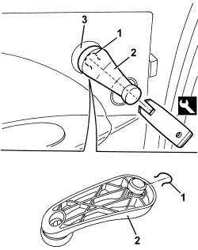
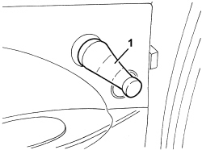

7010D38 REAR SIDE DOOR MANUAL WINDOW OPENING MECHANISM HANDLE/RING NUT (ONE), LEFT OR RIGHT - R.R
- Path
- Procedures > 70 FITTINGS > 7010 PASSENGER COMPARTMENT REAR SIDE DOORS > 7010D REAR SIDE DOOR WINDOW GLASSES > 7010D38 REAR SIDE DOOR MANUAL WINDOW OPENING MECHANISM HANDLE/RING NUT (ONE), LEFT OR RIGHT - R.R
- Kind
- repair procedure (removal / refitting; the operation number is the code)
- Applies to
- all engines; all production periods
- Interactive page
- https://sloeber94.github.io/elrnDB/alfa/159/en/#/939011183
Applies to: all engines; all production periods
 Removing
Removing
 Refitting
Refitting1. Undo the retaining buttons using the special tool.
Tool | Description | Function | Validity |
|---|---|---|---|
1878034000 | Tool | Removing window opening handle |
2. Withdraw the handle from the splined shaft.
3. Remove the trim, undoing the internal retainers indicated.

Applies to: all engines; all production periods
Refitting
Removing- Check that the handle and the trim are not damaged.
- Place the trim in position and do up the inner retainers.
1. Position the handle in its seat so that it is in the position shown in the figure with the glass fully raised.

Applies to: all engines; all production periods
- Fit the retaining clip.
- Check the correct movement of the handle and glass.
Topics that link to this page (18)
- 5505B21 REAR DOOR WIRING (ONE) LEFT OR RIGHT - R.R
- 5570T94 REAR TWEETER (ONE), LH OR RH - R R
- 5570T96 REAR SIDE SPEAKER (ONE), LEFT OR RIGHT- R.R
- 7010A09 REAR SIDE DOOR INTERIOR SUPPORT FRAME - R.R.
- 7010A28 REAR SIDE DOOR OPENING LIMITER - R.R
- 7010C11 REAR SIDE DOOR EXTERIOR HANDLE - R.R
- 7010C53 INTERIOR HANDLE FOR REAR DOOR OPENING MECHANISM (ONE) LEFT OR RIGHT - R.R.
- 7010C65 CONNECTING ROD FROM EXTERIOR HANDLE TO REAR SIDE DOOR LOCK - R.R.
- 7010D12 REAR SIDE DOOR DESCENDING WINDOW GLASS FASTENING ELEMENT (ONE), LEFT OR RIGHT - R.R.
- 7010D15 REAR SIDE DOOR DESCENDING WINDOW GLASS (ONE), LEFT OR RIGHT - R.R
- 7010D21 FRONT SIDE DOOR GLASS FRONT GUIDE (1), LH OR RH - R R
- 7010D33 CHANNEL FOR DOOR DESCENDING GLASS INNER GUIDE (ONE) LEFT OR RIGHT FOR REAR SIDE DOOR - R.R.
- 7010D35 REAR SIDE DOOR MANUAL WINDOW MECHANISM (ONE), LEFT OR RIGHT - R.R.
- 7010E10 REAR SIDE DOOR INNER PANEL - R.R. OR REPLACE
- 7010E50 REAR SIDE DOOR PILLAR TRIM (ONE) LEFT OR RIGHT - R.R.
- 7010N21 REAR SIDE DOOR LOCK MOTOR/LOCK ASSEMBLY, LEFT OR RIGHT - R.R
- 7010M21 REAR SIDE DOOR ELECTRICALLY-OPERATED WINDOW, LEFT OR RIGHT - R.R.
- 7205E38 STRIPPING REAR SIDE DOOR